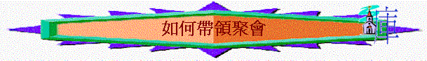

1.清楚聚會的目的
∼是記念主/是祈禱/是唱詩讚美神/是彼此相交/是真理的教導？
2.收窄聚會的目標
∼若是記念主，記念主甚麼事情？記念主的降生/主的受苦/記念主的復活？
∼若是記念主的受苦，記念那方面的受苦？
記念主
-->
記念受苦的主 -->
記念主受人厭棄
-->
記念主與父分離
--> 記念主死在十架
∼記念主受若後，又期望肢體有甚麼回應？
3.計劃聚會的脈絡
引言：引出聚會的主題
(1)記念主被受人厭棄
(2)記念主與父神分離
(3)記念主釘在十字架
回應及總結
∼通常，若一個聚會能達到3個目標，已是一件很好的事了
4.編排仔細的內容
目的：記念主的受苦
|
脈絡及目標 |
內容與方法 |
時間 |
資源及工具 |
備註 |
|
引言 |
∼肢體分享一件受苦的事，而引出記念主受苦的聚會 |
10mins |
|
圍圈坐 |
|
(1)記念主被人厭棄 |
∼用2首擘餅詩歌領唱 |
15mins |
詩歌書 |
|
|
(2)記念主與父神分離 |
∼讀相關經文
∼唱1首相關詩歌，分享自己感受 |
10mins |
聖經 |
|
|
(3)記念主釘在十字架 |
∼主釘死短片
∼唱1首相關詩歌 |
20mins |
Video
projector |
|
|
回應與總結 |
∼肢體填一些回應與立志及分享
∼唱1首回應詩
∼祈禱 |
15mins |
紙 |
|
5.聚會預備的舉例
A.祈禱會
目的：為神家祈禱
|
脈絡及目標 |
內容與方法 |
時間 |
|
引言 |
∼唱一首祈禱的詩歌 |
10mins |
|
(1)為傳道人祈禱 |
∼邀請傳道人分享代禱事項
∼一同公禱 |
10mins |
|
(2)為教會祈禱 |
∼讀出祈禱之訊部份內容
∼2個一組祈禱 |
10mins |
|
(3)為團契祈禱 |
∼團友分享守望近來團契的情況
∼導師補充代禱事項
∼分組祈禱 |
20mins |
B.詩歌分享聚會
目的：分享信心的詩歌，彼此激勵
|
脈絡及目標 |
內容與方法 |
時間 |
|
引言 |
∼團友分享我們若沒有信心會怎樣？而帶出信心的重要及今次的主題 |
5mins |
|
(1)信神的大能 |
∼唱2首神大能的詩歌 |
10mins |
|
(2)信神的應許 |
∼團友分享一些深刻的經文(關乎神的應許)
∼唱1首神應許的詩歌 |
15mins |
|
(3)信神的帶領 |
∼唱1首神帶領的詩歌
∼團友分享神帶領的經過 |
15mins |
|
總結與回應 |
∼用1首關乎要有信心的詩歌作回應 |
5mins |
C.相交關顧聚會
目的：彼此有更深的認識
|
脈絡及目標 |
內容與方法 |
時間 |
|
引言 |
∼問有沒有肢體可以記得所有團友名字，從而帶出我們要更深認識團友 |
5mins |
|
(1)認識彼此名字 |
∼玩扑儍瓜遊戲 |
15mins |
|
(2)認識彼此特長 |
∼玩「世界之最」遊戲 |
15mins |
|
(3)認識彼此近況 |
∼分組分享近況及彼此代禱 |
20mins |
D.真理專題教導聚會
目的：認識神的完全
|
脈絡及目標 |
內容與方法 |
時間 |
|
引言 |
∼引起動機遊戲：
每人用自己不慣用的手（左手／右手）各畫一個圓形，比較那一人最圓，而引申即使如何用心，人所畫的圓形似終有不完全，但我們的神卻完全！
|
10mins |
|
(1)祂的作為完全
(申32:4) |
∼拿神創造天地六日的畫冊/投影片
∼問他們：若創造天地萬物的次序完全（若次序轉變，有什麼不好結果？）
雲柱是在日間，火柱是在夜間（若調轉會怎樣？）
∼講解：引申神的作為是完全的，不會亂的，是最好的 |
15mins |
|
(2)祂的道是完全
(撒下22:31) |
∼互相傾談，引對方傾談，但不可講「我」字──引申人有時會控制不了自己的說話，會講錯說話，但神的道──神的話卻是沒錯的
∼講解：聖經是神的話，沒有錯的，法庭也用
；聖經的預言沒錯──預言巴比倫滅亡，預言以色列人被擄歸回全部應驗；神的話也叫人完全，我們要努力讀祂的話
|
15mins |
|
(3)祂的屬性完全
(太5:45,48) |
∼講解：屬性代表性情，品格 ，而人會亂發脾氣，但神不輕易發怒
，人會愛愛自己的人，但神愛罪人，憐憫歹人，日頭照好人，也照壞 |
15mins |
|
回應與總結—效法天父的完全
(太5:18) |
∼每人有一張畫了人全身凡圖（代表自己），團友圈出最想自己完全的部份，例如：想口完全，圈出口
∼分享圖
|
10mins |
6.帶領週會應有技巧
A. 頭：要對真理熟悉，要信神話語沒有一句不帶能力
B. 眼：要勇敢望會聚，有眼神交流
C. 口：要講解真理時肯定，要留意大細聲及語調，善用咪
D. 心：敬畏及投入的心
E. 手：多多祈禱；也可善用白板，可寫下聚會主題及分題
F. 腳：可進入人群中，有互動及交流
G.同工：可邀請同工幫助，互相配搭
H.場地：之前好好預備要用的物資及有合適場地
I.
時間：留意人的集中力，最好講一個真理及或帶一個主題時，不要超過15分鐘，不要超時